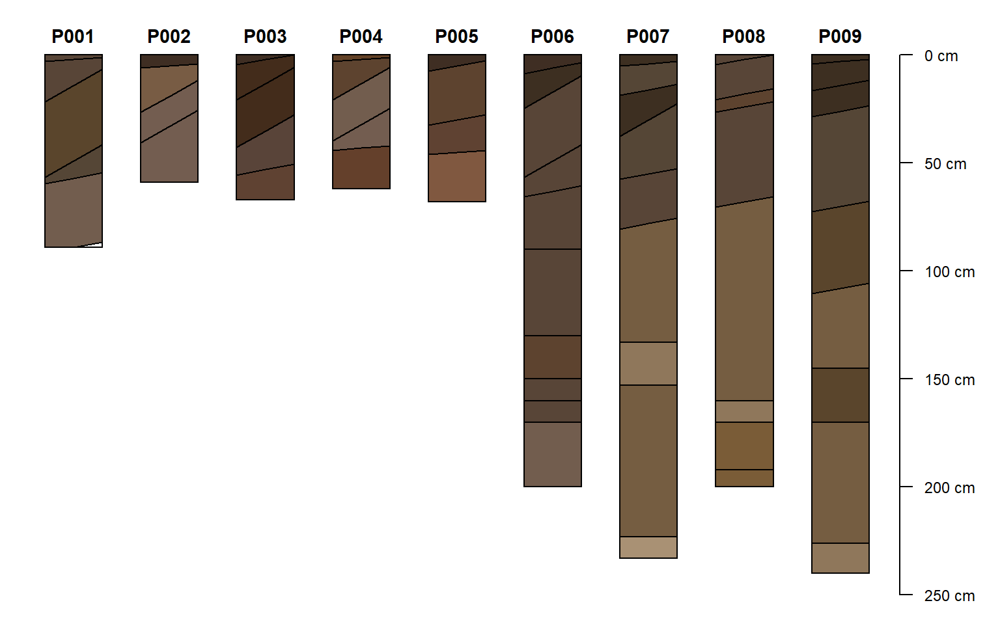

R/hzBoundary.R
hzDistinctnessCodeToOffset.RdThis function will convert USDA-NCSS horizon boundary distinctness codes into vertical (+/-) offsets in cm, based on the Field Book for Describing and Sampling Soils, version 3.0.
hzDistinctnessCodeToOffset( x, codes = c("V", "A", "C", "G", "D"), offset = c(0.5, 2, 5, 15, 20)/2 )
| x | vector of boundary distinctness codes to be converted |
|---|---|
| codes | code values, adjust as needed |
| offset | vertical offset factors (cm), approximating 1/2 of the transitional zone thickness, see details |
vector of offsets with same length as x
The default offsets are based on the high-end of ranges presented in "transitional zone thickness criteria" from the Field Book version 3.0 (page 2-6). Offsets are returned as 1/2 of the transitional zone thickness so that horizon boundaries can be adjusted up/down from horizon depths. See plotSPC, specifically the hz.distinctness.offset argument for visualization ideas. Missing data in x (NA) or codes that are not defined in codes are returned as 0 offsets.
Additional examples are available in the Visualization of Horizon Boundaries tutorial.
Field Book for Describing and Sampling Soils, version 3.0
D.E. Beaudette
# example data data(sp1) # compute 1/2 transitional zone thickness from distinctness codes sp1$hzdo <- hzDistinctnessCodeToOffset(sp1$bound_distinct) # convert colors from Munsell to hex-encoded RGB sp1$soil_color <- with(sp1, munsell2rgb(hue, value, chroma)) # promote to SoilProfileCollection depths(sp1) <- id ~ top + bottom # adjust margins op <- par(mar=c(0,0,0,1.5)) # sketches, adjust width, adjust text size, include coded hz distinctness offsets plotSPC(sp1, width=0.3, cex.names=0.75, hz.distinctness.offset = 'hzdo')